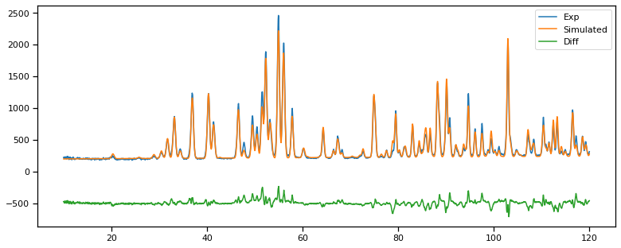

Refinement of PbSO4 with least-squares#
In this example we will refine the neutron data for PbSO4 using least-squares fitting.
import numpy as np
import matplotlib.pyplot as plt
import seaborn as sns
sns.set_context('notebook')
# esyScience, diffraction
from easyDiffractionLib import Phases
from easyDiffractionLib.sample import Sample as Job
from easyDiffractionLib.interface import InterfaceFactory as Calculator
from easyDiffractionLib.elements.Experiments.Pattern import Pattern1D
from easyDiffractionLib.elements.Backgrounds.Point import PointBackground, BackgroundPoint
from easyDiffractionLib.Profiles.P1D import Instrument1DCWParameters as CWParams
from easyCore.Fitting.Fitting import Fitter
GSAS-II binary directory: /home/erik/.local/lib/python3.8/site-packages/GSASII/bindist
ImportError for wx/mpl in GSASIIctrlGUI: ignore if docs build
# helper functions
def print_parameters(job):
""" Print all fit-parameters in job. """
for x in job.get_fit_parameters():
print(x)
def compute_rmse(y_target, y_predicted):
""" Compute root mean squared error (RMSE) between target and predicted values """
delta_y = y_target - y_predicted
rmse = np.sqrt(np.mean(delta_y**2))
return rmse
def compute_mse_weighted(y_target, y_predicted):
""" Compute the weighted mean squared error. (weighting by y_target) """
delta_y = y_target - y_predicted
weight = y_target
mse_weighted = np.mean(delta_y**2 / weight)
return mse_weighted
Load the data and setup Job#
# load cif
cif_fname = '../datasets/neutron_powder_PbSO4/PbSO4.cif'
phases = Phases.from_cif_file(cif_fname)
# load diffraction data
meas_fname = '../datasets/neutron_powder_PbSO4/D1A@ILL.xye'
meas_x, meas_y, meas_e = np.loadtxt(meas_fname, unpack=True)
print('Data shape:', meas_x.shape, meas_y.shape)
# setup interface to CrysPy and Job
calculator = Calculator(interface_name='CrysPy')
job = Job(phases=phases, parameters=CWParams(), interface=calculator)
Data shape: (2201,) (2201,)
Temp CIF: /tmp/easydiffraction_temp.cif
Define which parameters to refine#
Here the parameters to be refined are determined, and initial values are set rather close to the optimal solution in order for bumps-dream to converge quicker.
# setup
job.parameters.wavelength = 1.912
# add background
bkg = PointBackground(linked_experiment='PbSO4')
bkg.append(BackgroundPoint.from_pars(meas_x[0], 200))
bkg.append(BackgroundPoint.from_pars(meas_x[-1], 250))
job.set_background(bkg)
# set which parameters to refine
job.pattern.scale.fixed = True
job.phases[0].scale.fixed = False
job.pattern.zero_shift.fixed = False
job.parameters.resolution_u.fixed = False
job.parameters.resolution_v.fixed = False
job.parameters.resolution_w.fixed = False
job.backgrounds[0][0].y.fixed = False
job.backgrounds[0][1].y.fixed = False
job.phases[0].cell.length_a.fixed = False
job.phases[0].cell.length_b.fixed = False
job.phases[0].cell.length_c.fixed = False
print('Initial parameters:')
print_parameters(job)
Initial parameters:
<Parameter 'length_a': 8.48+/-0 Å, bounds=[0:inf]>
<Parameter 'length_b': 5.398+/-0 Å, bounds=[0:inf]>
<Parameter 'length_c': 6.958+/-0 Å, bounds=[0:inf]>
<Parameter 'scale': 1.0+/-0, bounds=[0:inf]>
<Parameter 'resolution_u': 0.0002+/-0, bounds=[-inf:inf]>
<Parameter 'resolution_v': -0.0002+/-0, bounds=[-inf:inf]>
<Parameter 'resolution_w': 0.012+/-0, bounds=[-inf:inf]>
<Parameter 'zero_shift': 0.0+/-0, bounds=[-inf:inf]>
<Parameter 'intensity': 200.0+/-0, bounds=[-inf:inf]>
<Parameter 'intensity': 250.0+/-0, bounds=[-inf:inf]>
Diffraction pattern before fitting#
# Initial before fit
y_initial = calculator.fit_func(meas_x)
rmse_initial = compute_rmse(meas_y, y_initial)
msew_initial = compute_mse_weighted(meas_y, y_initial)
print(f'Initial: RMSE {rmse_initial:.3f}, MSE-weighted {msew_initial:.3f}')
# plot
fig = plt.figure(figsize=(11, 4.5))
plt.plot(meas_x, meas_y, label='Exp')
plt.plot(meas_x, y_initial, label='Initial')
plt.legend()
fig.tight_layout()
Initial: RMSE 417.279, MSE-weighted 171.943
Fitting with least-squares#
The least-squares fitting is done through lmfit package, which is the default fitting engine.
fitter = Fitter(job, calculator.fit_func)
print('Fitting engine:', fitter.engine.name)
weights = 1/np.sqrt(meas_y)
result = fitter.fit(meas_x, meas_y, weights=weights, method='least_squares', minimizer_kwargs={'diff_step': 1e-8})
Fitting engine: lmfit
# print refined parameters
print_parameters(job)
y_refined = calculator.fit_func(meas_x)
rmse_refined = compute_rmse(meas_y, y_refined)
msew_refined = compute_mse_weighted(meas_y, y_refined)
print(f'Refined: RMSE {rmse_refined:.3f}, MSE-weighted {msew_refined:.3f}')
# save data
data = dict()
for p in job.get_fit_parameters():
key = p.name
if key in data:
key = key + '-1'
data[key] = p.raw_value, p.error
np.save('refinement_results/least_squares.npy', data, allow_pickle=True)
<Parameter 'length_a': 8.47701+/-0.00027 Å, bounds=[0:inf]>
<Parameter 'length_b': 5.39576+/-0.00019 Å, bounds=[0:inf]>
<Parameter 'length_c': 6.95584+/-0.00032 Å, bounds=[0:inf]>
<Parameter 'scale': 1.211+/-0.006, bounds=[0:inf]>
<Parameter 'resolution_u': 0.195+/-0.016, bounds=[-inf:inf]>
<Parameter 'resolution_v': -0.476+/-0.030, bounds=[-inf:inf]>
<Parameter 'resolution_w': 0.479+/-0.013, bounds=[-inf:inf]>
<Parameter 'zero_shift': 0.1568+/-0.0028, bounds=[-inf:inf]>
<Parameter 'intensity': 197.1+/-1.2, bounds=[-inf:inf]>
<Parameter 'intensity': 240.1+/-1.6, bounds=[-inf:inf]>
Refined: RMSE 44.076, MSE-weighted 3.420
# plot refined diffraction pattern
fig = plt.figure(figsize=(11, 4.5))
plt.plot(meas_x, meas_y, label='Exp')
plt.plot(meas_x, y_refined, label='Simulated')
plt.plot(meas_x, meas_y - y_refined-500, label='Diff')
plt.legend()
fig.tight_layout()
